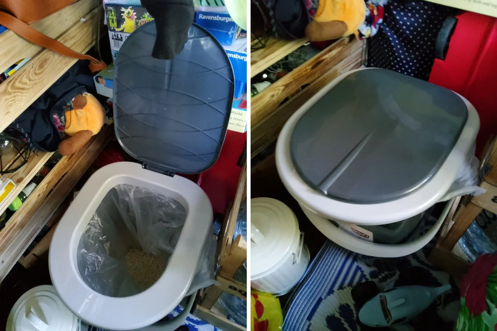

Meine erste Toilette im Camper — einfach, klein und alles andere als glamourös

Über Camper-Toiletten redet kaum jemand gern — bis nachts weit und breit keine Toilette zu finden ist. Für mich war deshalb schon früh klar: Auch im kleinsten T4 brauche ich eine eigene Lösung. Nicht luxuriös, nicht fest eingebaut, aber jederzeit erreichbar.
Meine erste Lösung war eine einfache Eimertoilette
Auf den Fotos seht ihr meine erste Camper-Toilette: ein kompakter Behälter mit Sitz und Deckel. Innen kam ein Beutel hinein, dazu saugfähiges Material. Nach der Benutzung ließ sich alles verschließen und die Toilette wieder an ihren Platz stellen. Sie brauchte keinen Wasseranschluss, keine Chemie und keinen festen Einbau.
Für meinen damaligen Ausbau war genau das der Vorteil. Ich konnte sie herausnehmen, umstellen und sauber machen. Wenn im Bus wirklich jeder Zentimeter zählt, ist eine mobile Lösung manchmal ehrlicher und praktischer als ein aufwendiger Toilettenraum, den man gar nicht hat.
Was im Alltag gut funktionierte
- Sie war klein genug für meinen vorhandenen Stauraum.
- Ich war nachts und an abgelegenen Stellplätzen unabhängig.
- Es gab keine Flüssigkeit, die während der Fahrt herumschwappen konnte.
- Mit einem frischen Beutel war sie schnell wieder einsatzbereit.
Und was mich daran störte
Natürlich war diese erste Lösung nicht perfekt. Alles landet in einem Behälter, deshalb muss man sehr sauber arbeiten und regelmäßig entsorgen. Auch beim Verstauen will ich keine offenen oder schlecht verschlossenen Beutel im Wohnraum haben. Hygiene, Hände waschen und ein fester Ablauf gehören für mich deshalb unbedingt dazu.
Später habe ich andere Systeme ausprobiert. Meine erste Trockentrenntoilette war eine BOXIO — und mit diesem konkreten Modell war ich nicht zufrieden. Das Prinzip des Trennens finde ich weiterhin sinnvoll, aber das heißt nicht, dass jedes Produkt automatisch zu meinem Alltag passt. Meine einfache Eimertoilette und die BOXIO sind also zwei verschiedene Stationen meiner Toiletten-Geschichte.
Bis bald und immer gute Fahrt,
eure Tussy 💛